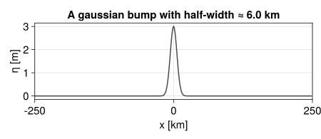
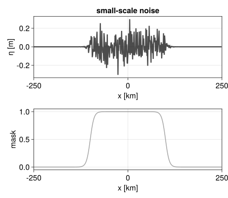
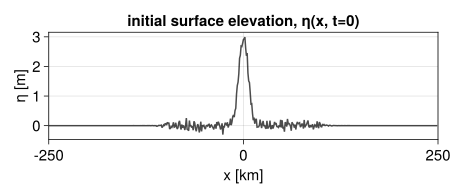
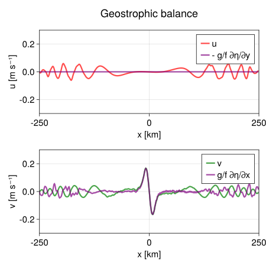

Linear rotating shallow water dynamics
This example can be run online via  . Also, it can be viewed as a Jupyter notebook via
. Also, it can be viewed as a Jupyter notebook via  .
.
This example solves the linear 1D rotating shallow water equations for the $u(x, t)$, $v(x, t)$ and the surface surface elevation $\eta(x, t)$, for a fluid with constant rest-depth $H$. That is, the total fluid's depth is $H + \eta(x, t)$ with $|\eta| \ll H$.
The linearized equations for the evolution of $u$, $v$, $\eta$ are:
\[\begin{aligned} \partial_t u - f v & = - g \partial_x \eta - \mathrm{D} u, \\ \partial_t v + f u & = - \mathrm{D} v, \\ \partial_t \eta + H \partial_x u & = - \mathrm{D} \eta. \end{aligned}\]
Above, $g$ is the gravitational acceleration, $f$ is the Coriolis parameter, and $\mathrm{D}$ indicates a hyperviscous linear operator of the form $(-1)^{n_ν} ν \nabla^{2 n_ν}$, with $ν$ the viscosity coefficient and $n_ν$ the order of the operator.
Rotation introduces the deformation length scale, $L_d = \sqrt{g H} / f$. Disturbances with length scales much smaller than $L_d$ don't "feel" the rotation and propagate as inertia-gravity waves. Disturbances with length scales comparable or larger than $L_d$ should be approximately in geostrophic balance, i.e., the Coriolis acceleration $f \widehat{\bm{z}} \times \bm{u}$ should be in approximate balance with the pressure gradient $-g \bm{\nabla} \eta$.
using FourierFlows, CairoMakie, Printf, Random, JLD2
using LinearAlgebra: mul!, ldiv!Coding up the equations
A demonstration of FourierFlows.jl framework
What follows is a step-by-step tutorial demonstrating how you can create your own solver for an equation of your liking.
The basic building blocks for a FourierFlows.Problem are:
Gridstruct containining the physical and wavenumber grid for the problem,Paramsstruct containining all the parameters of the problem,Varsstruct containining arrays with the variables used in the problem,Equationstruct containining the coefficients of the linear operator $L$ and the function that computes the nonlinear terms, usually namedcalcN!().
The Grid structure is provided by FourierFlows.jl. We simply have to call one of either OneDGrid(), TwoDGrid(), or ThreeDGrid() constructors, depending on the dimensionality of the problem. All other structs mentioned above are problem-specific and need to be constructed for every set of equations we want to solve.
First let's construct the Params struct that contains all parameters of the problem.
struct Params{T} <: AbstractParams
ν :: T # Hyperviscosity coefficient
nν :: Int # Order of the hyperviscous operator
g :: T # Gravitational acceleration
H :: T # Fluid depth
f :: T # Coriolis parameter
endNow the Vars struct that contains all variables used in this problem. For this problem Vars includes the representations of the flow fields in physical space u, v and η and their Fourier transforms uh, vh, and ηh.
struct Vars{Aphys, Atrans} <: AbstractVars
u :: Aphys
v :: Aphys
η :: Aphys
uh :: Atrans
vh :: Atrans
ηh :: Atrans
endA constructor populates empty arrays based on the dimension of the grid and then creates Vars struct.
"""
Vars(grid)
Construct the `Vars` for 1D linear shallow water dynamics based on the dimensions of the `grid` arrays.
"""
function Vars(grid)
Dev = typeof(grid.device)
T = eltype(grid)
@devzeros Dev T grid.nx u v η
@devzeros Dev Complex{T} grid.nkr uh vh ηh
return Vars(u, v, η, uh, vh, ηh)
endIn Fourier space, the 1D linear shallow water dynamics read:
\[\begin{aligned} \frac{\partial \hat{u}}{\partial t} & = \underbrace{ f \hat{v} - i k g \hat{\eta} }_{N_u} \; \underbrace{- \nu k^2 }_{L_u} \hat{u} , \\ \frac{\partial \hat{v}}{\partial t} & = \underbrace{ - f \hat{u} }_{N_v} \; \underbrace{- \nu k^2 }_{L_v} \hat{v} , \\ \frac{\partial \hat{\eta}}{\partial t} & = \underbrace{ - i k H \hat{u} }_{N_{\eta}} \; \underbrace{- \nu k^2 }_{L_{\eta}} \hat{\eta} . \end{aligned}\]
Although, e.g., terms involving the Coriolis accelaration are, in principle, linear we include them in the nonlinear term $N$ because they render the linear operator $L$ non-diagonal.
With these in mind, we construct function calcN! that computes the nonlinear terms.
"""
calcN!(N, sol, t, clock, vars, params, grid)
Compute the nonlinear terms for 1D linear shallow water dynamics.
"""
function calcN!(N, sol, t, clock, vars, params, grid)
@. vars.uh = sol[:, 1]
@. vars.vh = sol[:, 2]
@. vars.ηh = sol[:, 3]
@. N[:, 1] = params.f * vars.vh - im * grid.kr * params.g * vars.ηh # + f v - g ∂η/∂x
@. N[:, 2] = - params.f * vars.uh # - f u
@. N[:, 3] = - im * grid.kr * params.H * vars.uh # - H ∂u/∂x
dealias!(N, grid)
return nothing
endNext we construct the Equation struct:
"""
Equation(params, grid)
Construct the equation: the linear part, in this case the hyperviscous dissipation,
and the nonlinear part, which is computed by `calcN!` function.
"""
function Equation(params, grid)
T = eltype(grid)
dev = grid.device
L = zeros(dev, T, (grid.nkr, 3))
D = @. - params.ν * grid.kr^(2*params.nν)
L[:, 1] .= D # for u equation
L[:, 2] .= D # for v equation
L[:, 3] .= D # for η equation
return FourierFlows.Equation(L, calcN!, grid)
endWe now have all necessary building blocks to construct a FourierFlows.Problem. It would be useful, however, to define some more "helper functions". For example, a function that updates all variables given the solution sol which comprises $\hat{u}$, $\hat{v}$ and $\hat{\eta}$:
"""
updatevars!(prob)
Update the variables in `prob.vars` using the solution in `prob.sol`.
"""
function updatevars!(prob)
vars, grid, sol = prob.vars, prob.grid, prob.sol
@. vars.uh = sol[:, 1]
@. vars.vh = sol[:, 2]
@. vars.ηh = sol[:, 3]
ldiv!(vars.u, grid.rfftplan, deepcopy(sol[:, 1])) # use deepcopy() because irfft destroys its input
ldiv!(vars.v, grid.rfftplan, deepcopy(sol[:, 2])) # use deepcopy() because irfft destroys its input
ldiv!(vars.η, grid.rfftplan, deepcopy(sol[:, 3])) # use deepcopy() because irfft destroys its input
return nothing
endAnother useful function is one that prescribes an initial condition to the state variable sol.
"""
set_uvη!(prob, u0, v0, η0)
Set the state variable `prob.sol` as the Fourier transforms of `u0`, `v0`, and `η0`
and update all variables in `prob.vars`.
"""
function set_uvη!(prob, u0, v0, η0)
vars, grid, sol = prob.vars, prob.grid, prob.sol
A = typeof(vars.u) # determine the type of vars.u
# below, e.g., A(u0) converts u0 to the same type as vars expects
# (useful when u0 is a CPU array but grid.device is GPU)
mul!(vars.uh, grid.rfftplan, A(u0))
mul!(vars.vh, grid.rfftplan, A(v0))
mul!(vars.ηh, grid.rfftplan, A(η0))
@. sol[:, 1] = vars.uh
@. sol[:, 2] = vars.vh
@. sol[:, 3] = vars.ηh
updatevars!(prob)
return nothing
endLet's prescibe parameter values and solve the PDE
We are now ready to write up a program that sets up parameter values, constructs the problem prob, # time steps the solutions prob.sol and plots it.
Choosing a device: CPU or GPU
dev = CPU() # Device (CPU/GPU)Numerical parameters and time-stepping parameters
nx = 512 # grid resolution
stepper = "FilteredRK4" # timestepper
dt = 20.0 # timestep (s)
nsteps = 320 # total number of time-stepsPhysical parameters
Lx = 500e3 # Domain length (m)
g = 9.8 # Gravitational acceleration (m s⁻²)
H = 200.0 # Fluid depth (m)
f = 1e-2 # Coriolis parameter (s⁻¹)
ν = 100.0 # Viscosity (m² s⁻¹)
nν = 1 # Viscosity order (nν = 1 means Laplacian ∇²)Construct the structs and you are ready to go!
Create a grid and also params, vars, and the equation structs. Then give them all as input to the FourierFlows.Problem() constructor to get a problem struct, prob, that contains all of the above.
grid = OneDGrid(dev; nx, Lx)
params = Params(ν, nν, g, H, f)
vars = Vars(grid)
equation = Equation(params, grid)
prob = FourierFlows.Problem(equation, stepper, dt, grid, vars, params)Setting initial conditions
For initial condition we take the fluid at rest ($u = v = 0$). The free surface elevation is perturbed from its rest position ($\eta=0$); the disturbance we impose a Gaussian bump with half-width greater than the deformation radius and on top of that we superimpose some random noise with scales smaller than the deformation radius. We mask the small-scale perturbations so that it only applies in the central part of the domain by applying
The system develops geostrophically-balanced jets around the Gaussian bump, while the smaller-scale noise propagates away as inertia-gravity waves.
First let's construct the Gaussian bump.
gaussian_width = 6e3
gaussian_amplitude = 3.0
gaussian_bump = @. gaussian_amplitude * exp( - grid.x^2 / (2*gaussian_width^2) )
fig = Figure(resolution = (600, 260))
ax = Axis(fig[1, 1];
xlabel = "x [km]",
ylabel = "η [m]",
title = "A gaussian bump with half-width ≈ " * string(gaussian_width/1e3) * " km",
limits = ((-Lx/2e3, Lx/2e3), nothing))
lines!(ax, grid.x/1e3, gaussian_bump; # divide with 1e3 to convert m -> km
color = (:black, 0.7),
linewidth = 2)
Next the noisy perturbation. The mask is simply a product of hyperbolic tangent functions.
mask = @. 1/4 * (1 + tanh( -(grid.x - 100e3) / 10e3)) * (1 + tanh( (grid.x + 100e3) / 10e3))
noise_amplitude = 0.1 # the amplitude of the noise for η(x, t=0) (m)
η_noise = noise_amplitude * Random.randn(size(grid.x))
@. η_noise *= mask # mask the noise
fig = Figure(resolution = (600, 520))
kwargs = (xlabel = "x [km]", limits = ((-Lx/2e3, Lx/2e3), nothing))
ax1 = Axis(fig[1, 1]; ylabel = "η [m]", title = "small-scale noise", kwargs...)
ax2 = Axis(fig[2, 1]; ylabel = "mask", kwargs...)
lines!(ax1, grid.x/1e3, η_noise; # divide with 1e3 to convert m -> km
color = (:black, 0.7),
linewidth = 3)
lines!(ax2, grid.x/1e3, mask; # divide with 1e3 to convert m -> km
color = (:gray, 0.7),
linewidth = 2)
Sum the Gaussian bump and the noise and then call set_uvη!() to set the initial condition to the problem prob.
η0 = @. gaussian_bump + η_noise
u0 = zeros(grid.nx)
v0 = zeros(grid.nx)
set_uvη!(prob, u0, v0, η0)
fig = Figure(resolution = (600, 260))
ax = Axis(fig[1, 1];
xlabel = "x [km]",
ylabel = "η [m]",
title = "initial surface elevation, η(x, t=0)",
limits = ((-Lx/2e3, Lx/2e3), nothing))
lines!(ax, grid.x/1e3, η0; # divide with 1e3 to convert m -> km
color = (:black, 0.7),
linewidth = 2)
Saving output
filepath = "."
filename = joinpath(filepath, "linear_swe.jld2")
get_sol(prob) = prob.sol
out = Output(prob, filename, (:sol, get_sol))Output
├──── prob: FourierFlows.Problem{DataType, Matrix{ComplexF64}, Float64, Matrix{Float64}}
├──── path: ./linear_swe_1.jld2
└── fields: Dict{Symbol, Function}(:sol => Main.get_sol)We call saveproblem to we write the problem's configuration parameters to the .jld2 file.
saveproblem(out)Time-stepping the Problem forward
for j = 0:nsteps
updatevars!(prob)
stepforward!(prob)
saveoutput(out)
endVisualizing the simulation
First we load the saved output files.
using JLD2
file = jldopen(out.path)
iterations = parse.(Int, keys(file["snapshots/t"]))
nx = file["grid/nx"]
x = file["grid/x"]512-element Vector{Float64}:
-250000.0
-249023.4375
-248046.875
-247070.3125
-246093.75
-245117.1875
-244140.625
-243164.0625
-242187.5
-241210.9375
⋮
241210.9375
242187.5
243164.0625
244140.625
245117.1875
246093.75
247070.3125
248046.875
249023.4375Then we animate the output. We use Makie's Observable to animate the data. To dive into how Observables work we refer to Makie.jl's Documentation.
n = Observable(1)
u = @lift irfft(file[string("snapshots/sol/", iterations[$n])][:, 1], nx)
v = @lift irfft(file[string("snapshots/sol/", iterations[$n])][:, 2], nx)
η = @lift irfft(file[string("snapshots/sol/", iterations[$n])][:, 3], nx)
toptitle = @lift "t = " * @sprintf("%.1f", file[string("snapshots/t/", iterations[$n])]/60) * " min"
fig = Figure(resolution = (600, 800))
kwargs_η = (xlabel = "x [km]", limits = ((-Lx/2e3, Lx/2e3), nothing))
kwargs_uv = (xlabel = "x [km]", limits = ((-Lx/2e3, Lx/2e3), (-0.3, 0.3)))
ax_η = Axis(fig[2, 1]; ylabel = "η [m]", title = toptitle, kwargs_η...)
ax_u = Axis(fig[3, 1]; ylabel = "u [m s⁻¹]", kwargs_uv...)
ax_v = Axis(fig[4, 1]; ylabel = "v [m s⁻¹]", kwargs_uv...)
Ld = @sprintf "%.2f" sqrt(g * H) / f /1e3 # divide with 1e3 to convert m -> km
title = "Deformation radius √(gh) / f = "*string(Ld)*" km"
fig[1, 1] = Label(fig, title, fontsize=24, tellwidth=false)
lines!(ax_η, grid.x/1e3, η; # divide with 1e3 to convert m -> km
color = (:blue, 0.7))
lines!(ax_u, grid.x/1e3, u; # divide with 1e3 to convert m -> km
color = (:red, 0.7))
lines!(ax_v, grid.x/1e3, v; # divide with 1e3 to convert m -> km
color = (:green, 0.7))
frames = 1:length(iterations)
record(fig, "onedshallowwater.mp4", frames, framerate=18) do i
n[] = i
endGeostrophic balance
It is instructive to compare the solution for $\bm{u}$ with its geostrophically balanced approximation, $f \widehat{\bm{z}} \times \bm{u}_{\rm geostrophic} = - g \bm{\nabla} \eta$, i.e.,
\[\begin{aligned} v_{\rm geostrophic} & = \frac{g}{f} \frac{\partial \eta}{\partial x} \ , \\ u_{\rm geostrophic} & = - \frac{g}{f} \frac{\partial \eta}{\partial y} = 0 \ . \end{aligned}\]
u_geostrophic = zeros(grid.nx) # -g/f ∂η/∂y = 0
v_geostrophic = params.g / params.f * irfft(im * grid.kr .* vars.ηh, grid.nx) #g/f ∂η/∂xThe geostrophic solution should capture well the the behavior of the flow in the center of the domain, after small-scale disturbances propagate away. Let's plot and see!
fig = Figure(resolution = (600, 600))
kwargs = (xlabel = "x [km]", limits = ((-Lx/2e3, Lx/2e3), (-0.3, 0.3)))
ax_u = Axis(fig[2, 1]; ylabel = "u [m s⁻¹]", kwargs...)
ax_v = Axis(fig[3, 1]; ylabel = "v [m s⁻¹]", kwargs...)
fig[1, 1] = Label(fig, "Geostrophic balance", fontsize=24, tellwidth=false)
lines!(ax_u, grid.x/1e3, vars.u; # divide with 1e3 to convert m -> km
label = "u",
linewidth = 3,
color = (:red, 0.7))
lines!(ax_u, grid.x/1e3, u_geostrophic; # divide with 1e3 to convert m -> km
label = "- g/f ∂η/∂y",
linewidth = 3,
color = (:purple, 0.7))
axislegend(ax_u)
lines!(ax_v, grid.x/1e3, vars.v; # divide with 1e3 to convert m -> km
label = "v",
linewidth = 3,
color = (:green, 0.7))
lines!(ax_v, grid.x/1e3, v_geostrophic; # divide with 1e3 to convert m -> km
label = "g/f ∂η/∂x",
linewidth = 3,
color = (:purple, 0.7))
axislegend(ax_v)
This page was generated using Literate.jl.